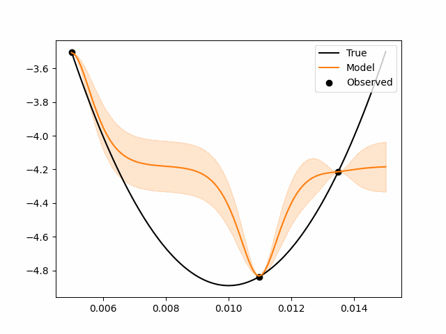
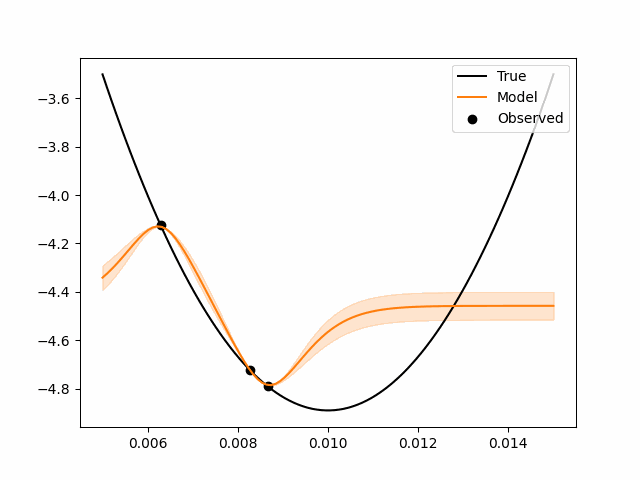
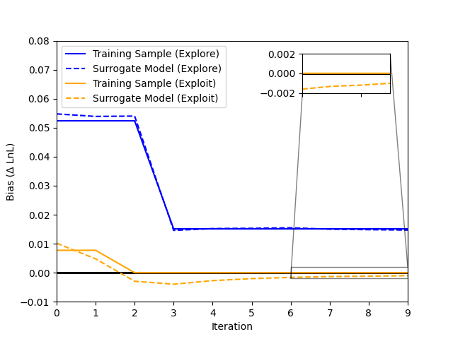
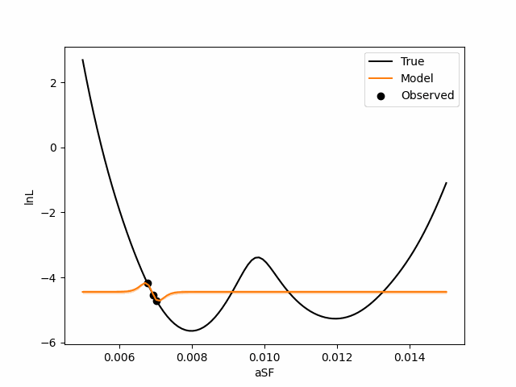
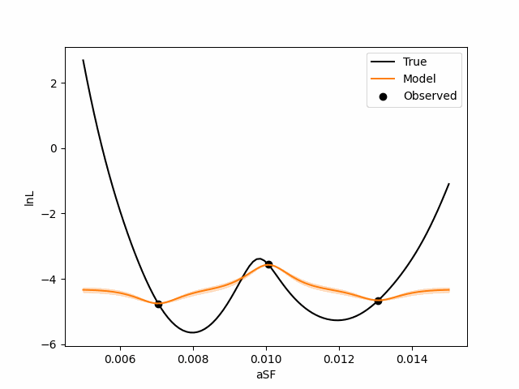
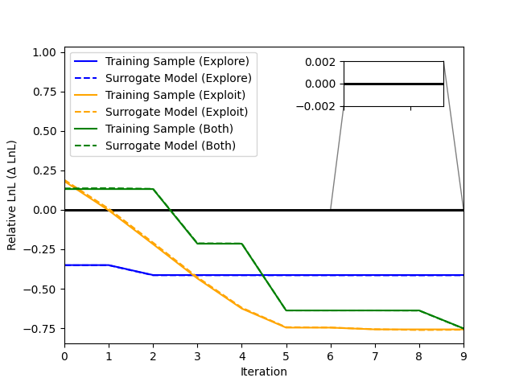

Example#
from trieste.acquisition.function import PredictiveVariance, ExpectedImprovement
import numpy as np
from lnl_surrogate.surrogate import train
from scipy.stats import norm
from lnl_surrogate.surrogate.setup_optimizer import McZGrid
from lnl_computer.mock_data import generate_mock_data
from typing import Dict
import matplotlib.pyplot as plt
import os
np.random.seed(0)
OUTDIR = 'outdir'
os.makedirs(OUTDIR, exist_ok=True)
Single Mode Guassian#
MINX, MAXX = 0.005, 0.015
MIDX = (MINX + MAXX) / 2
NORM = norm(MIDX, 0.003)
def mock_lnl(*args, **kwargs):
sf_sample: Dict = kwargs.get('sf_sample')
sf_sample = np.array(list(sf_sample.values()))
return NORM.logpdf(sf_sample), 0
def plot_true():
x = np.linspace(MINX, MAXX, 100).reshape(-1, 1)
true_y = NORM.logpdf(x) * -1.0
plt.plot(x, true_y, label='True', color='black')
plt.xlabel('aSF')
plt.ylabel('lnL')
return plt.gcf()
def plot_res(model, data, search_space):
x = np.linspace(MINX, MAXX, 100).reshape(-1, 1)
model_y, model_yunc = model.predict(x)
x_obs = data.query_points
y_obs = data.observations
tf_to_np = lambda x: x.numpy().flatten() if hasattr(x, 'numpy') else x
# make new fig
plt.figure()
plot_true()
plt.plot(x, model_y, label='Model', color="tab:orange")
plt.scatter(x_obs, y_obs, label='Observed', color='black')
yup, ydown = tf_to_np(model_y + model_yunc), tf_to_np(model_y - model_yunc)
plt.fill_between(x.flatten(), yup.flatten(), ydown.flatten(), alpha=0.2, color="tab:orange")
plt.legend(loc='upper right')
return plt.gcf()
McZGrid.lnl = mock_lnl
mock_data = generate_mock_data(OUTDIR)
fig = plot_true()
_ = fig.suptitle('True LnL')
## Exploratory Acquisition Function
res = train(
model_type='gp',
mcz_obs=mock_data.observations.mcz,
compas_h5_filename=mock_data.compas_filename,
acquisition_fns=[PredictiveVariance()],
params=['aSF'],
n_init=2,
n_rounds=10,
n_pts_per_round=1,
outdir=f"{OUTDIR}/gp",
truth=dict(
aSF=MIDX,
lnl=mock_lnl(sf_sample={'aSF': MIDX})[0] * -1.0
),
model_plotter=plot_res,
noise_level=1e-3
)
## Explotative Acquisition Function
res = train(
model_type='gp',
mcz_obs=mock_data.observations.mcz,
compas_h5_filename=mock_data.compas_filename,
acquisition_fns=[ExpectedImprovement()],
params=['aSF'],
n_init=2,
n_rounds=10,
n_pts_per_round=1,
outdir=f"{OUTDIR}/gp",
truth=dict(
aSF=MIDX,
lnl=mock_lnl(sf_sample={'aSF': MIDX})[0] * -1.0
),
model_plotter=plot_res,
noise_level=1e-3
)
Exploratory Acquisition |
Exploitative Acquisition |
|---|---|
 |
 |

Bimodal Gaussian#
from scipy.stats import gaussian_kde
from scipy.integrate import quad
import numpy as np
MINX, MAXX = 0.005, 0.015
MUS = [0.008, 0.012]
SIGMAS = [0.0009, 0.0005]
def generate_data(mus, sigmas, N: int):
"""Generate some data."""
data = [np.random.normal(mus[i], sigmas[i], N) for i in range(len(mus))]
x = np.random.choice([0, 1], N)
return data[0] * (1 - x) + data[1] * x
class MockLnLFunc():
def __init__(self):
np.random.seed(0)
data = generate_data(MUS, SIGMAS, 1000)
in_range = np.logical_and(data >= MINX, data <= MAXX)
assert np.all(in_range), f"{100 * len(data[~in_range]) / len(data)}% outside range. {data[~in_range]}"
self.kde = gaussian_kde(data)
def logpdf(self, x):
return np.log(self.kde(x.flatten()))
NORM = MockLnLFunc()
def mock_lnl(*args, **kwargs):
sf_sample: Dict = kwargs.get('sf_sample')
sf_sample = np.array(list(sf_sample.values()))
return NORM.logpdf(sf_sample), 0
McZGrid.lnl = mock_lnl
mock_data = generate_mock_data(OUTDIR)
fig = plot_true()
_ = fig.suptitle('True LnL')
---------------------------------------------------------------------------
NameError Traceback (most recent call last)
Cell In[1], line 38
34 sf_sample = np.array(list(sf_sample.values()))
35 return NORM.logpdf(sf_sample), 0
---> 38 McZGrid.lnl = mock_lnl
39 mock_data = generate_mock_data(OUTDIR)
41 fig = plot_true()
NameError: name 'McZGrid' is not defined
## Exploratory Acquisition Function
res = train(
model_type='gp',
mcz_obs=mock_data.observations.mcz,
compas_h5_filename=mock_data.compas_filename,
acquisition_fns=[PredictiveVariance()],
params=['aSF'],
n_init=2,
n_rounds=10,
n_pts_per_round=1,
outdir=f"{OUTDIR}/multi_explore",
truth=dict(
aSF=MIDX,
lnl=mock_lnl(sf_sample={'aSF': MIDX})[0] * -1.0
),
model_plotter=plot_res,
noise_level=1e-3
)
## Explotative Acquisition Function
res = train(
model_type='gp',
mcz_obs=mock_data.observations.mcz,
compas_h5_filename=mock_data.compas_filename,
acquisition_fns=[ExpectedImprovement()],
params=['aSF'],
n_init=2,
n_rounds=10,
n_pts_per_round=1,
outdir=f"{OUTDIR}/multi_exploit",
truth=dict(
aSF=MIDX,
lnl=mock_lnl(sf_sample={'aSF': MIDX})[0] * -1.0
),
model_plotter=plot_res,
noise_level=1e-3
)
## Both Acquisition Function
res = train(
model_type='gp',
mcz_obs=mock_data.observations.mcz,
compas_h5_filename=mock_data.compas_filename,
acquisition_fns=[PredictiveVariance(), ExpectedImprovement()],
params=['aSF'],
n_init=2,
n_rounds=10,
n_pts_per_round=1,
outdir=f"{OUTDIR}/multi_combined",
truth=dict(
aSF=MIDX,
lnl=mock_lnl(sf_sample={'aSF': MIDX})[0] * -1.0
),
model_plotter=plot_res,
noise_level=1e-3
)
Exploratory Acquisition |
Exploitative Acquisition |
Combined Acquisition |
|---|---|---|
|
 |
 |

